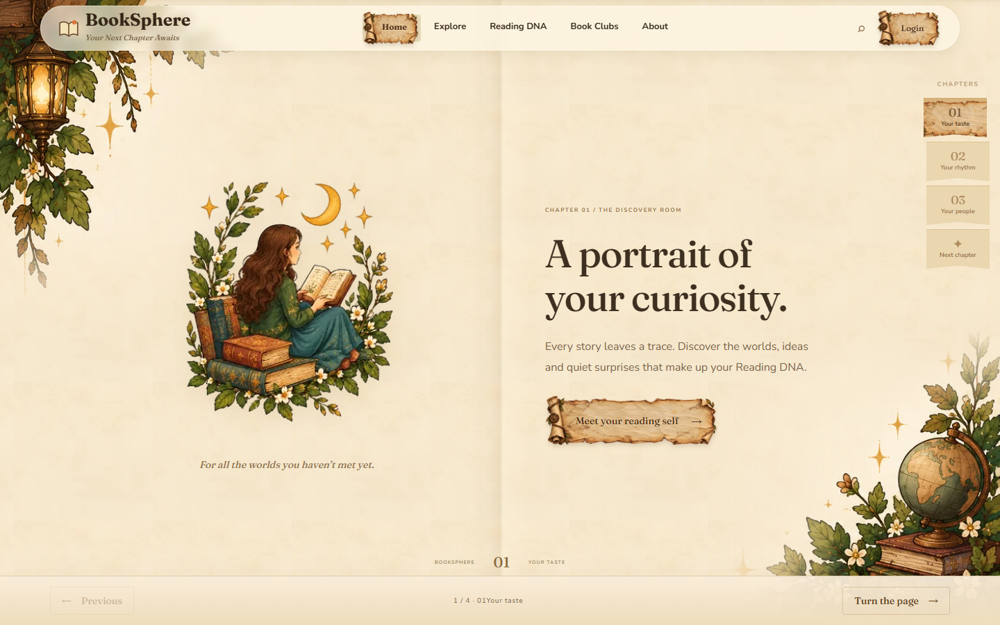
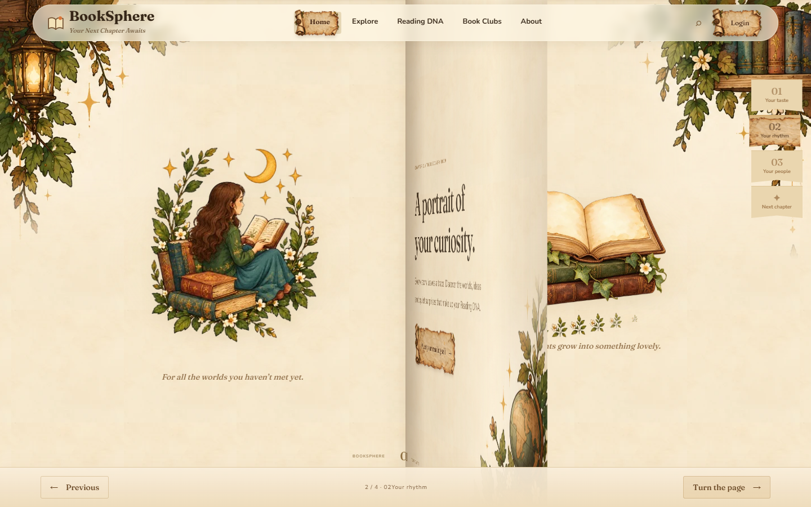
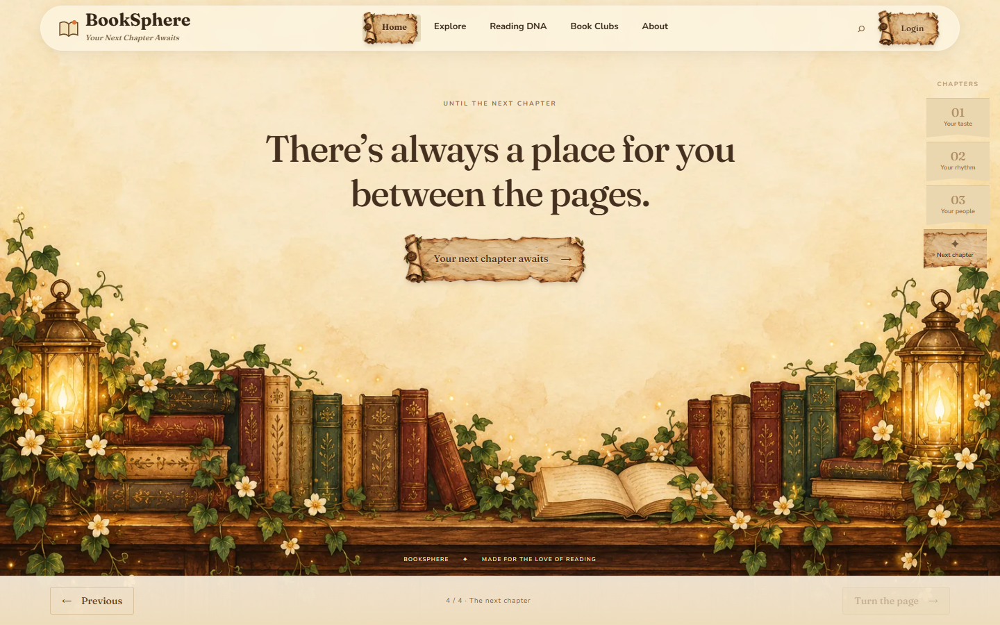
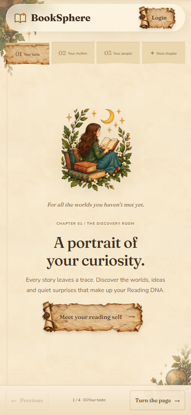
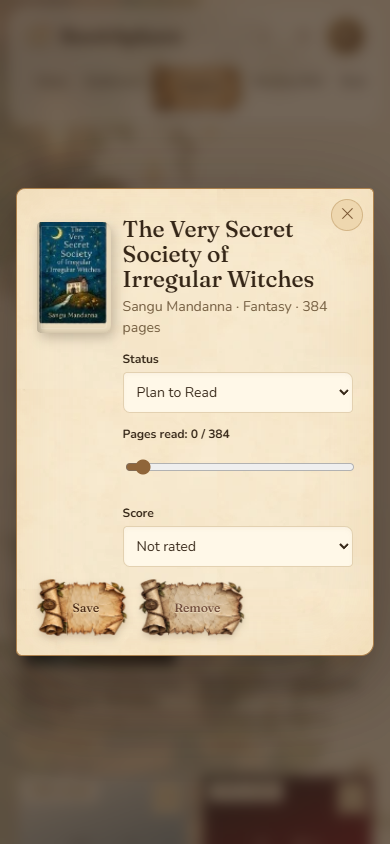
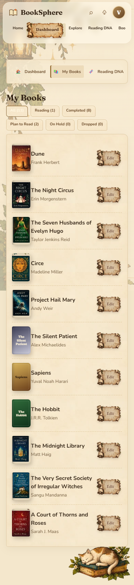

The book



Your own library, in the same materials
A pocket-sized edition



The chapters now share one bound spread: 01 → 02 → 03 → final. Turn using the lower controls, chapter bookmarks, arrow keys, wheel, or a horizontal swipe. Reduced motion switches pages immediately.





